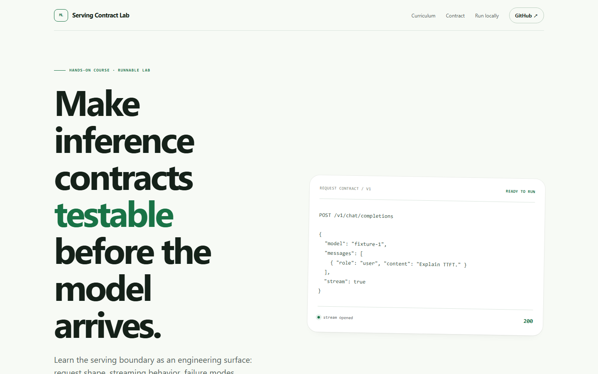

M.S. in Computer Technology计算机技术硕士
Jinan University · 暨南大学
AI systems engineer · independent AI developerAI 系统工程师 · 独立 AI 开发者
Industrial software engineer with AI research experience. I build agent products and performance-minded systems that can be opened, tested, and understood.工业软件工程师，具备 AI 研究经历。我构建可以打开、验证和理解的 Agent 产品与高性能系统。
Profile个人信息
Industrial software, AI research, and independent product work meet here. The public record stays focused on what can be inspected.这里汇集工业软件、AI 研究和独立产品实践。公开内容只保留可以被核验的工作。
Education教育经历
Formal training in computer technology and electronic information science.计算机技术与电子信息科学的学习背景，构成后续系统与 AI 实践的基础。
Jinan University · 暨南大学
Jinan University · 暨南大学
Research record研究成果
Work across medical imaging, biomedical data, forecasting, Android security, financial prediction, and applied machine learning.研究覆盖医学影像、生物医学数据、预测、Android 安全、金融预测与应用机器学习。
Open ResearchGate profile打开 ResearchGate 主页Experience工作经历
Company names and location details stay private here. The roles, time span, and technical work remain visible.这里隐藏公司名称和地区信息，但保留角色、时间和技术工作，方便理解经验轨迹。
C++ EngineerC++ 工程师
Build and optimize BIM/CAD systems for data management, business queries, scene capture, graphics export, and display performance.负责 BIM/CAD 数据管理、业务查询、场景捕获、图形导出和显示性能相关 C++ 系统开发。
Game Development Intern游戏开发实习生
Contributed to game-development tasks and supporting implementation work in a production team environment.参与游戏开发相关功能和配套实现，熟悉生产团队中的协作与交付流程。
Algorithm Intern算法实习生
Built data, training, and evaluation workflows for gesture and face computer vision; worked on tracking, quantization-oriented optimization, and model-driven animation prototypes.参与手势与人脸视觉模型的数据、训练和评测流程，以及跟踪、面向量化的优化和模型驱动动画原型。
Game Tools Intern游戏工具实习生
Developed Python/Qt tools for a game-engine workflow and prototyped monocular 3D face reconstruction with StyleGAN-based texture transfer.使用 Python/Qt 开发游戏引擎工作流工具，参与单目 3D 人脸重建和基于 StyleGAN 的纹理风格迁移原型。
Selected work精选项目
Real product surfaces first. Source and engineering detail follow where they are public and safe to inspect.先看真实产品，再看可以公开核验的代码与工程细节。
Live agent product在线 Agent 产品
An agent-centered research product that turns live signals into structured, inspectable surfaces.以 Agent 为核心的研究产品，将实时信号整理成结构化、可检查的研究界面。
Explore the public product through topic tracking, agent analysis, and an industry-chain decision map. The Web and iOS surfaces are presented as one product trail.通过热点追踪、Agent 分析和产业链决策图查看在线产品。Web 与 iOS 作为同一条产品体验链展示。


Course homepage · runnable lab课程首页 · 可运行实验
A hands-on course for making inference contracts testable before a real model arrives.一门围绕推理服务契约的实践课程，在真正接入模型之前先把接口、流式行为和失败边界变得可测试。


Open-source workbench开源工作台
Turn source material into reusable, evidence-linked agent skills with a local-first pipeline.通过 local-first 流程，将素材整理成可复用、带证据关联的 Agent Skill。

C++ systems demoC++ 系统工程 Demo
Layered allocation, ownership states, contention, cross-thread release, and large-run reuse with reviewable reports.分层分配、所有权状态、竞争、跨线程释放和大对象复用，并生成可核验报告。
Private work · anonymized case私有经历 · 脱敏案例
Property frameworks, command extension, rule checking, compiler-style front ends, geometry, and display performance.属性框架、命令扩展、规则检查、编译器式前端、几何与显示性能。
Details stay private; the engineering pattern is part of the resume.具体代码保持私有，工程方法会体现在简历中。
Public work公开入口
Source, research, and real product surfaces are collected here. Private employer and location details stay off this page.代码、研究和真实产品入口集中在这里；公司与地区信息不出现在公开页面。